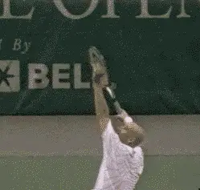
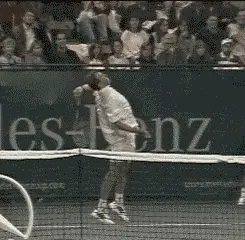
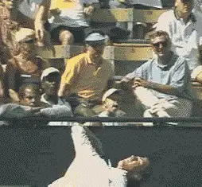
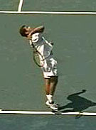
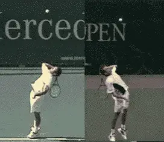
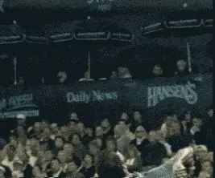
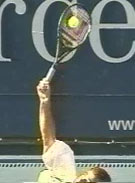

The Myth of the Wrist: The Serve¶
John Yandell¶
If I were to identify the single most common piece of technical advice on the serve-and possibly the world's most common "tennis tip," it would be "snap your wrist" to get power and spin.

Belief in the wrist snap is a common myth. In reality it has nothing to do with the bio-mechanics of the swing path on the serve.
It might be familiar advice, and thousands of recreational players may try it everyday, but Advanced Tennis high speed digital video shows that the "wrist snap" is a myth. In reality the role of the wrist is "passive," and the emphasis on wrist snap obscures the true bio-mechanical keys to developing a sound swing path on the serve.
When coaches talk about the alleged action of the wrist on the serve, they describe it in two ways. First, as a "snap" in which the wrist breaks forward in the so-called "wave bye bye" motion.
Second, they describe it as a "carving" motion in which the wrist moves the racquet head around the side of the ball to impart slice.
High speed video shows that neither is an accurate description of what actually happens to the wrist in the service motion of the best players.
There is no wrist "snap" at contact. Any forward movement of the wrist occurs long after the ball is off the racquet.
As for the idea of "carving" around the side of the ball, that doesn't happen either. With the ball on the strings for only 1/250 of a second, there's no way the racquet could move substantially, much less trace a path partially around the circumference of the ball.
In reality, the front edge of the racquet is moving the other way (slightly backward) as part of the pronation of the hitting arm.

The human eye confuses what sometimes happens after contact, with what actually causes the hit. The result? The Myth of the Wrist Snap.
When I say the wrist snap is a myth, I am not claiming there is no movement of the wrist whatsoever in the serving motion. It's just that this movement is not a causative factor.
The wrist definitely moves slightly upward as the racquet moves up to contact. Sometimes it appears to move slightly from left to right (for a right hander) during or after contact, but other times this sideways movement is absent. It sometimes (but not always) moves or breaks forward after contact.
A player like Marat Safin has little or no forward movement after contact. Greg Rusedksi sometimes has a radical forward movement of the wrist in the followthrough, but other times none at all. Sampras is somewhere in between. Sometimes his wrist breaks slightly forward, but sometimes it doesn't.
For all these players, the forward motion of the wrist, if and when it does occur, is a reaction to the hitting motion, not the cause.
It also appears that these various wrist movements are not something players are doing consciously or through specific muscle contractions. Instead they seem to be the natural consequence of other core elements in the motion.
Far from being the key to power and spin, then, the role of the wrist in the serve appears to be passive. It plays virtually no role in creating a great swing path and good ball contact, and the attempt to emphasize the wrist in the hitting action is misguided and counterproductive. As one well-known national coach puts it: the wrist is along for the ride.
No significant wrist action at contact on the serve? How could that be? Before you call up your personal teaching professional and berate him for misleading you all these years, realize one thing-it's not really his fault! This is because no pro-or any other human being-has actually ever seen the moment of contact on the serve, or any other stroke. The event lasts only about 4 milliseconds, or 1/250 of a second-much too fast an event for the human eye to resolve clearly.

Rotating the body is another source of stable power. Again, the racquet head remains in a fixed position.
So where does the widespread belief in the wrist snap come from? We can't see the contact point with the naked eye. But what we do see somewhat more clearly is what happens a few milliseconds later, when the motion has started to slow down. We can see the wrist has changed position, sometimes rather radically. What we can't see is that this change didn't happen during contact with the ball.
If you watch a lot of high level serving either on TV or in person, it's easy to conclude that the wrist "snaps" forward. In the motion of Greg Rusedski, for example, the angle between the wrist and the racquet can change by 90 degrees or more on some serves.
But this is where the Advanced Tennis high speed video is critical to understand the actual sequence of events. Filmed at 250 frames per second, we can see the snap at contact is an illusion, happening well out into the followthrough and long after the ball has left the strings.
If this change in angle between the racquet and the arm happens after the contact, it can't be a causal factor in the motion. If it was a causal factor, we would see it in the serves of all the top players most, if not all of the time.
There is no doubt that the arm and hand action in the service motion is by far the most complex of all the strokes. As we have seen (Myth of the Wrist, Forehand), on the forehand, all top players establish a hitting arm position before contact that is basically unchanged until well after the ball is off the strings. The same is true on the backhand side, and on the volleys also.
It's different on the serve. The position of the hand, forearm, and upper arm all change relative to each other from the start of the upward swing to the ball until well after the ball has left the strings and the followthrough is almost complete.
So, if the wrist snap isn't the secret, what are the real keys to this complex motion and to developing a high quality technical swing pattern? We can identify three elements that are shared by virtually all the top servers.

Pete Sampras
Note the nearly identical position of the racquet to the body at the completion of the racquet drop. Click on the player's photo to study high speed video of the entire motion from this camera position.
[The first is the position of the racquet at the completion of the racquet drop. The second the triceps extension that straightens out the arm as it moves upward to contact. The third is the internal rotation of the hitting arm.]
Let's take a close look at the actual pattern of the swing on the serve and see the role of all of these elements, including what actually happens to the wrist in the motions of Pete Sampras, Greg Rusedski, Marat Safin, and Andre Agassi--4 players who at first glance may appear to have widely divergent technical patterns.
Let's start with the first critical bio-mechanical element: the position of the racquet in relationship to the body at the completion of the racquet drop.
Despite all their differences--the shape of the backswing, the height of the toss, the timing of the motion, the depth of knee bend, the level of body rotation--all four players reach the bottom of the racquet drop with the racquet in virtually the same position relative to the body.
This position is with the racquet along the side of, and perpendicular to, the plane of the torso. There is absolutely no such thing as a "back scratch" position. Instead the racquet falls along the side of the server's body. Note, all four players achieve this with a relatively low elbow position. That is, the upper arm is parallel to or close to parallel with the plane of the shoulders.

Despite the many differences in their motions, Sampras and Rusedski share the 3 key elements of racquet drop, triceps extension, and internal arm rotation.
The average player may or may not have the flexibility to model this position exactly, and may need a higher elbow position in order to develop a full drop. There is no doubt, however, that achieving the fullest possible drop with the lowest possible elbow position is the most fundamental key in developing a good motion.
From the racquet drop position, the player is now ready to start the motion upward and forward to the ball. This motion has two parts. The first is the triceps extension. At the drop, the hitting arm is bent at the elbow at around 90 degrees. Through a contraction of the triceps muscles, the player begins to straighten his arm and move it upward toward contact, until it becomes fully extended (i.e., straight) at the contact point itself.
When the arm is about half way to full extension, the hand, racquet, forearm, and upper arm also begin to rotate from left to right (again for a righthander). This is the third factor in the swing pattern. This internal rotating motion is often referred to by the technical term "pronation." At the time of the contact, the hitting arm and the racquet are rotating as a unit from the shoulder, a motion that continues well out into the follow through.
One of the liveliest debates in coaching in recent years has been over the role of pronation, particularly the extreme or fully "pronated" position in the followthrough. This position can appear quite extreme in a player such as Sampras, causing some players and coaches to stress the post contact rotation as a key to good serving.
In reality, the continuation of the arm rotation is a consequence of the way the player moves the hand, arm, and racquet to the ball. This movement pattern is the key to the swing path. The post contact pronation, like the movement of the wrist, is a consequence and not a cause.
Although the motion from the drop to the contact is complex, we can actually boil it down to a single key. A few years ago at a coaching convention when I was presenting some high speed video of Sampras's arm action, a teaching pro in the audience stood up and said: "It's like giving the ball a 'high five' with a continental grip."
I didn't get the pro's name, and I hope he emails in if he's reading this article, because I'd like to give him full credit for this description, which is virtually a perfect analogy.
From the racquet drop, the player should attempt to give the ball a "high five" with the palm of his racquet hand. With the continental serving grip, this will take the racquet head directly on the correct path to the ball and cause the player to make contact at an angle that will maximize both power and spin.
We can see here what the problem is with both of the wrist snap analogies introduced at the beginning of the article, and why both have such a negative impact. The attempt to execute either will actually disrupt or prevent the proper execution of the real swing path to the ball.
Trying the "wave bye bye" snap will encourage the player to rotate the arm too early in order to get the hand in position to "snap" directly forward. Trying to "carve" around the side of the ball will prevent the player from rotating at all.
So where does all this leave the wrist? And how do we account for the actual motion of the wrist we observe in the video? Let's look how the position of the wrist changes over the course of the motion from the racquet drop to the contact and then out in the followthrough.

The complex, but passive wrist movement in the serve of Pete Sampras, before, during and after contact.
First, at the drop, we can see the wrist naturally falls into a slightly laid back position. In order for the arm to straighten out fully, the wrist has to come forward so that the palm of the hand is in line with the rest of the arm and can rotate as a unit from the shoulder.
This happens in the last few frames before contact, as the video shows. Is this evidence of a "snap"? I don't think this is what we are seeing. If there were a conscious "snap" we would see this forward motion continue at the contact and directly afterwards. We would see some version of the "wave bye bye" position right after contact. But we don't. I've been asked at coaching presentations if it's possible that contact with the ball might be stopping the "snap" from continuing.
It's a great question, but I don't think so. Try it yourself. Toss a ball in the air and hit it forward by snapping your wrist forward with the "wave bye bye" motion. The force of the contact isn't nearly enough to prevent you from breaking your wrist forward as you strike the ball.
And notice one more thing. The ball went down! Many bio-mechanical researchers have established that the racquet head is moving upward at contact. This would be very difficult to achieve if, on every serve, players were really trying to snap the wrist forward. An error in timing of only thousandths of a second would cause the ball to bounce on the server's side of the net!
So this slight movement in the wrist on the way up isn't the start of a snap. It just brings the racquet in line with the arm in preparation for contact. Is it caused by even a slight muscle contraction? Probably not. More likely it's the natural result of the triceps extension and the arm rotation in the movement from the racquet drop to the ball.
Which brings us to what may be the most important point about the wrist. It may not "snap," but that doesn't mean it should be stiff! We all know that the great servers look relaxed and effortless. To maximize the racquet head acceleration from the drop to the contact, the whole arm needs to be as loose as possible and that includes the wrist. This relaxation, I believe, helps explains any motion we do see in the wrist either during or after contact.
Look closely at the animation of Pete's wrist action above and you'll see this in the sideways, left to right movement that seems to happen just after the contact. It's what bio-mechanists call "ulnar deviation." You can feel this for yourself if you go to the racquet drop position with the palm of your hand. Now with an imaginary continental grip, give an imaginary ball an imaginary "high five." Watch (and feel) what your wrist does. It won't snap forward, but it will naturally flex a little from left to right.
Now try it again and continue the motion with an imaginary followthrough. Watch again (and feel) how after the wrist moves left to right, it will then move or "break" slightly forward. If your wrist is loose, you won't be able to stop either of these motions from happening.
This explains the wrist motion we see in the service motion of the top players. Their arms are relaxed and their wrists naturally move as a consequence of their technical swing pattern. The amount and type of wrist motion we see in these servers also seems to be related to the type and location of the serve. For example, when Sampras goes wide in the deuce court, or when Rusedski goes wide in the ad, both seem to show more sideways wrist motion.

Pete Sampras
Click on the player to study high speed video of the arm action in the serve.
When they go down the middle, there tends to be more forward break after the hit. This makes perfect sense in terms of the slight changes in racquet trajectory and the relative amounts of sidespin versus topspin the players put into these different deliveries. In all cases though, their motions are built on the three keys of racquet drop, arm extension, and internal arm rotation.
As I said, these issues of how the hand, arm, racquet, and wrist move on the service motion are complex, impossible to see with the naked eye, and difficult to analyze and describe. So I've included some additional high speed digital movies of the four players I've discussed. Check them out for yourself and see whether you agree or disagree about the role of the wrist and the key elements in the swing path on the serve.

John Yandell is widely acknowledged as one of the leading videographers and students of the modern game of professional tennis. His high speed filming for Advanced Tennis and TPA have provided new visual resources that have changed the way the game is studied and understood by both players and coaches. He has done personal video analysis for hundreds of high level competitive players, including Justine Henin-Hardenne, Taylor Dent and John McEnroe, among others.
In addition to his role as Editor of TPA he is the author of the critically acclaimed book Visual Tennis. The John Yandell Tennis School is located in San Francisco, California.